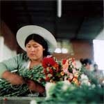
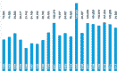

|
|
Mittwoch, 28.05.2003 - 01:05:31
|
|
Getäuscht, verkauft, missbraucht
|
|
Soeben
ist das Buch »Getäuscht, verkauft, missbraucht - Reportagen
und Hintergründe zum weltweiten Kinderhandel«, herausgegeben
von Claudia Berker und Hans-Martin Große-Oetringhaus (beide
terre des hommes), erschienen. Die meisten Autorinnen und Autoren,
überwiegend Journalisten, haben zu Gunsten der Arbeit von
terre des hommes gegen Kinderhandel auf ihr Honorar verzichtet.
Kinder sind zu einer begehrten Ware für den internationalen
Markt geworden. Sie sind Opfer von Menschen, die vor allem eines
wollen: Profit. Ob als Prostituierte, als Plantagenarbeiter, Dienstmädchen
oder Bettler: Kinder bringen hohe Gewinne. Sie selbst bezahlen
dafür mit ihrer Gesundheit und häufig mit ihrem Leben.
»Getäuscht, verkauft, missbraucht« enthält
Reportagen und Geschichten zu den verschiedenen Aspekten des Kinderhandels
in Afrika, Asien, Lateinamerika und Europa. Eine ausführliche
Einleitung bietet einen Überblick über das Thema und
stellt die einzelnen Beiträge in den Gesamtkontext. Im Anhang
finden sich Kontaktadressen, Hinweise auf Literatur zum Thema
sowie Informationen zu der derzeit laufenden Kampagne gegen Kinderhandel,
die länderübergreifend von terre des hommes organisiert
wird. Das Buch richtet sich an das breite Publikum und eignet
sich für den Schulunterricht.
Mit Beiträgen von: Claudia Berker, Kathyayini Chamaraj, Heinrich
Gasser, Hans-Martin Große-Oetringhaus, Hans Hielscher, Monika
Hoegen, Jörn Klare, Sonja Matheson, Uwe Pollmann, Birgit
Schwarz, Rüdiger Siebert, Peter Strack.
Das Buch ist anschaulich und zugleich fundiert geschrieben, enthält
konkrete Beispiele und ist mit zahlreichen Hintergrundinformationen
ausgestattet. Es umfasst 227 Seiten, ist mit einer Reihe von Fotos
illustriert und kostet 19,90 Euro.
Es kann über den terre
des hommes-Onlineshop bestellt werden.
|
|
Montag, 26.05.2003 - 22:45:23
|
|
6.500 € Reinerlös bei ausverkauftem
Konzert mit dem Quantz-Collegium
|
|
Zum
Abschluss des 25-jährigen Jubiläums unserer AG luden
wir am 17. Mai das renommierte Quantz-Collegium in das Schloss
Favorite ein. Das historische Ambiente der Sala terrena - der
Hauptsaal des Schlosses - bot die richtige Atmosphäre für
das Ensemble unter der Leitung von Flötist Jochen Baier.
Die Musiker des Collegiums entführten die mehr als 150 Zuhörer
in die Welt der Klassik. Mit Werken von Luigi Cherubini, Luigi
Boccherini, Luigi Gatti, Felice Gardini und Jan Jakub Ryba ernteten
die virtuos spielenden Künstler viel Applaus und trugen so
zum Rekord-Erlös von 6.500 Euro bei, der für verschiedene
terre des hommes-Projekte zum Thema "Kinder im Krieg"
zur Verfügung gestellt wird.
zu den
Presseberichten
|
|
Dienstag, 20.05.2003 - 01:00:46
|
|
Kein neuer Krieg in Aceh/Indonesien
|
| Mit
großer Besorgnis registriert das entwicklungspolitische Kinderhilfswerk
terre des hommes die offensichtlichen Planungen der indonesischen
Armee, erneut in der Provinz Aceh (Nord-Sumatra) zu intervenieren.
Damit würde der am 9. Dezember 2002 geschlossene Waffenstillstandsvertrag
gebrochen, an den die Bevölkerung der Provinz große Hoffnungen
geknüpft hatte. terre des hommes appelliert deshalb an die indonesische
Präsidentin Megawati, auf militärische Aktionen zu verzichten
und zum Dialog mit der Rebellenbewegung GAM zurückzukehren. terre
des hommes bittet auch Bundeskanzler Schröder, die indonesische
Präsidentin bei seinen Gesprächen in dieser Haltung zu bestärken.
Seit 26 Jahren herrscht in der rohstoffreichen Provinz Aceh ein
Bürgerkrieg, dem bereits über 10.000 Menschen zum Opfer
gefallen sind. Hunderttausende leben in Flüchtlingslagern
oder im benachbarten Malaysia. Besonders die Situation der Kinder
gibt Anlass zu großer Besorgnis. terre des hommes unterstützt
Hilfs- und Unterstützungsprojekte für Kinder in den
Internierungslagern und Ausbildungsprogramme für die vom
Krieg betroffenen Kinder, die auch darunter leiden, dass gezielt
Schulen niedergebrannt und Lehrer ermordet werden. Einheimische
Menschenrechtsorganisationen schätzen, dass allein im Jahr
2002 mindestens 1.200 Menschen Opfer des Bürgerkriegs wurden,
die überwiegende Mehrzahl von ihnen Zivilisten.
|
|
Montag, 12.05.2003 - 12:18:04
|
|
tdh: Konkrete Schritte zum Schutz von Kindern!
|
|
Die am 7./8. Mai vom US-Arbeitsministerium in Washington veranstaltete
Konferenz »Kinder im Kreuzfeuer« muss sich den Vorwurf
gefallen lassen, eine reine PR-Veranstaltung zu sein. Dies erklärte
das entwicklungspolitische Kinderhilfswerk terre des hommes zum Auftakt
der Konferenz, an der mehrere hundert Experten aus aller Welt, ehemalige
Kindersoldaten und Jugendliche teilnehmen sollen.
»Die USA haben über Jahre hinweg alles getan, um eine
Verbesserung des Schutzes von Kindern und Jugendlichen vor Rekrutierung
und Kampfeinsatz zu verhindern. Wir betrachten die Veranstaltung
daher mit einer gehörigen Portion Misstrauen«, erklärte
terre des hommes-Kinderrechtsexperte Andreas Rister. »Wenn
die USA einen Sinneswandel vollziehen und ihre Sorge um die Situation
der Kinder weltweit in konkrete Politik umsetzen wollten, wäre
als erster Schritt die überfällige Ratifikation der
UN-Kinderrechtskonvention erforderlich«, so Rister weiter.
terre des hommes kritisiert das geringe Interesse der internationalen
Staatengemeinschaft, sich für den Schutz von Kindern in Kriegen
und bewaffneten Konflikten einzusetzen. »Auch die Bundesregierung
ist offenbar in einen gesetzgeberischen Tiefschlaf verfallen«,
so Andreas Rister. Anders sei es nicht zu erklären, dass
Deutschland das im Februar 2002 in Kraft getretene Zusatzprotokoll
zur UN-Kinderrechtskonvention, mit dem Kinder unter 18 Jahren
vor Zwangsrekrutierung und Kriegseinsatz geschützt werden
sollen, immer noch nicht ratifiziert habe.
Nach Angaben der Vereinten Nationen sind derzeit 300.000 Kinder
in Armeen oder paramilitärischen Verbänden zwangsrekrutiert.
Für einen besseren Schutz dieser Kinder setzt sich terre
des hommes als Mitglied der »International Coalition to
Stop the Use of Child Soldiers« ein. In diesem Bündnis
setzt sich terre des hommes dafür ein, dass der Missbrauch
von Kindern als Soldaten weltweit geächtet wird.
weitere
Infos: "Kinder in bewaffneten Konflikten" |
|
Freitag, 09.05.2003 - 18:23:58
|
|
Faire Blumen zum Muttertag
|
|

Der 11. Mai ist der Ehrentag der Mütter. Viele von ihnen werden zum Muttertag mit
üppigen Blumensträußen überrascht, denn die Blume gilt als Symbol für Schönheit,
Liebe und Freude. Der Muttertag ist einer der Umsatz stärksten Tage im deutschen
Blumenhandel. Nur ca. zwölf Prozent der verkauften Blumen stammen jedoch aus
Deutschland. Der Rest wird aus den Niederlanden, zu einem Großteil aber auch aus
Afrika und Lateinamerika importiert.
Von den 200.000 Menschen, die in Afrika und Lateinamerika auf den Plantagen
arbeiten, sind zwei Drittel Frauen, die meisten von ihnen Mütter. Auch sie kennen
den Muttertag. Wie auch zu anderen Festtagen steigen rund um den Muttertag ihre
Arbeitszeiten auf 14 bis 16 Stunden am Tag. Doch die Löhne bleiben niedrig; die
Frauen bräuchten - je nach Land - zwischen drei und sieben Mindestlöhnen, um ihre
Familie menschenwürdig ernähren und versorgen zu können. Sie arbeiten meist ohne
festen Vertrag. Massiver Pestizideinsatz gefährdet ihre Gesundheit.
Wer diese Arbeitsbedingungen nicht unterstützen will, muss deshalb keinesfalls
auf den Blumenkauf verzichten. Das Kinderhilfswerk terre des hommes empfiehlt
vielmehr, nach Blumen mit dem »Flower Label« zu fragen. Diese Blumen stehen für
eine menschen- und umweltfreundliche Produktion.
In RASTATT können wir Ihnen ganz besonders "Floristik am Rathaus" empfehlen. Die
Inhaberin des Blumengeschäfts ist terre des hommes sehr verbunden und hat unsere AG
bereits einige Male mit Sach- und Geldspenden unterstützt:
Floristik am Rathaus
Inh. Birgit Lott
Lyzeumstr. 9
76347 Rastatt
Tel. 07222 / 93821-3
Fax. 07222 / 93821-4
Andere Blumenläden in Ihrer Region, die das »Flower Label« tragen finden Sie auf
dieser Seite.
weitere Infos und Links |
|
|
|
 Ansprechpartner Ansprechpartner
|
|
Wolfgang Deppisch
(Projektinfos)
Tel. 07222 / 32927
Heinz Wolf
(Sponsoring, Allgemeines)
Tel. 07225 / 75543
weitere Ansprechpartner
|
|
Erlöse
1992-2012
|
|

Jahr |
Euro |
1992 |
70.000 |
1993 |
75.600 |
1994 |
83.883 |
1995 |
69.617 |
1996 |
51.412 |
1997 |
61.749 |
1998 |
60.333 |
1999 |
68.742 |
2000 |
85.492 |
2001 |
106.375 |
2002 |
78.937 |
2003 |
84.027 |
2004 |
76.662 |
2005 |
149.941 |
2006 |
84.497 |
2007 |
105.958 |
2008 |
104.053 |
2009 |
100.833 |
2010 |
107.254 |
2011 |
103.600 |
| 2012 |
158.250 |
| 2013 |
163.420 |
1977-2013 |
mehr als 2,7 Mio. € |
|
Detailansicht der Erlöszahlen |
|
|
;){kind=link}